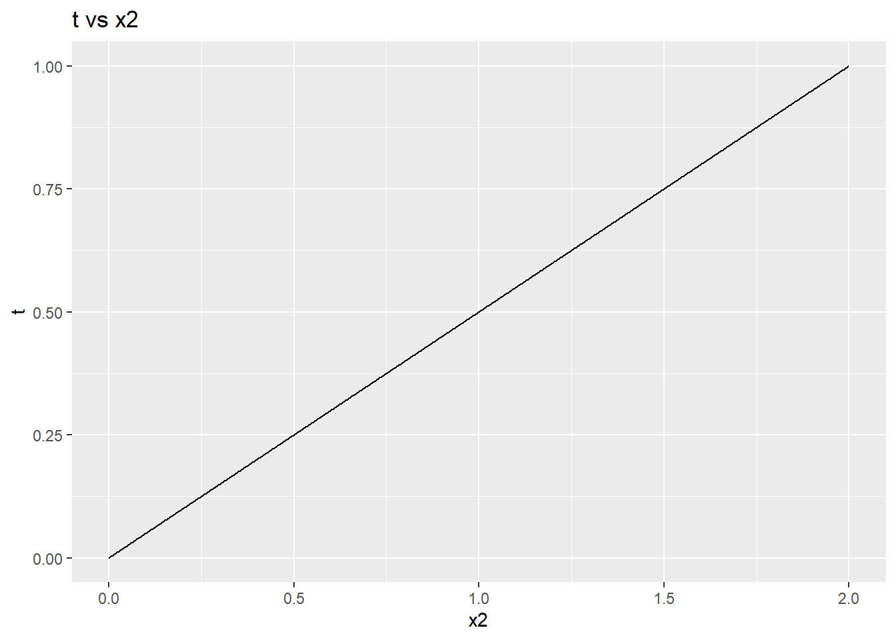
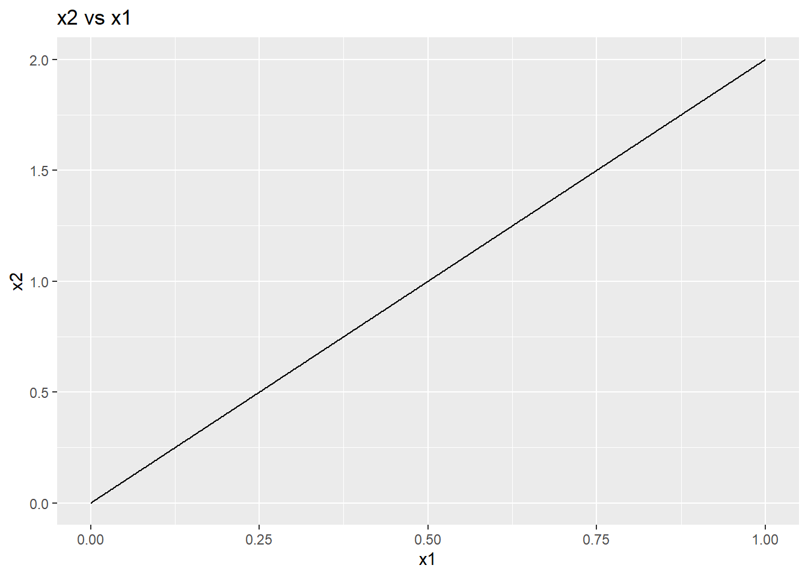
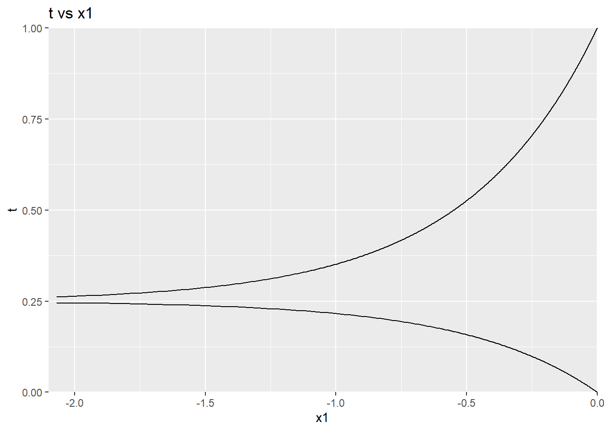
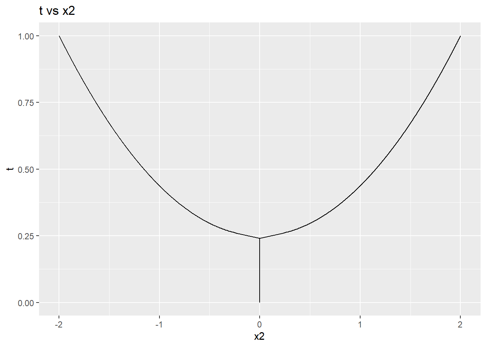

This post presents 3 simple examples of the homotopy principle applied to (fairly easy) linear and nonlinear systems of equations. At a very abstract level, given a system of equations for which a solution is needed, we convert this system to one whose solution we already know (or is easy to find out), and then bend this system till we get the solution to the original set of equations. These methods have very broad applications (Garcia and Zangwill 1981), and have been applied in the context of finding equlibria in Static Games (Bajari et al. 2010) and Dynamic Games (Borkovsky, Doraszelski, and Kryukov 2010).
Example 1: Linear System
Say we want to find the solution to the following system of linear equations: \[\begin{align} \left[ \begin{array} {rrrrr} 1 & 2 \\ 3 & 4 \\ \end{array}\right] \left[ \begin{array} {r} x_1 \\ x_2 \\ \end{array} \right] = \left[ \begin{array} {l} 5 \\ 11 \\ \end{array} \right] \tag{1} \end{align}\]
Readers should very easily be able to verify that the unique solution to this system is \[ (x_1,x_2) = (1,2) \]
Let’s convert this system and introduce an additional parameter \(t\), called the homotopy parameter, which varies from \(0\) to \(1\). Let’s call this new system \(H(x_1, x_2, t)\) \[\begin{align} \left[ \begin{array} {rr} 1 & 2 \\ 3 & 4 \\ \end{array}\right] \left[ \begin{array} {r} x_1 \\ x_2 \\ \end{array} \right] = \left[ \begin{array} {l} 5t \\ 11t \\ \end{array} \right] \tag{2} \end{align}\]
When \(t=0\), \(H(x_1, x_2, 0)\) yields the trivial (and only) solution \((x_1,x_2) = (0,0)\). When \(t=1\), we get our original system of equations back. When we solve for \((x_1, x_2)\) as a function of \(t\), we get: \[ (x_1(t),x_2(t)) = (t,2t) \] At \(t=1\), this will give us the solution we desire. Tracing the path of the solution gives us the following plots:


From this very simple example, we note that the general process followed is given below (Garcia and Zangwill 1981):
- Convert the system of equations into one that has a known solution (i.e. \(H(x_1, x_2, 0)\) case above)
- Introduce a new parameter \(t\), that gives the known system at \(t=0\) and the system for which the solutions are desired when \(t=1\)
- Trace the path of the solutions by changing the value of \(t\) from \(0\) to \(1\)
Example 2: Nonlinear System
Consider the following system of equations (from chapter 1, exercise 6 of (Garcia and Zangwill 1981)): \[\begin{align} F(x_1, x_2) = \left[ \begin{array} {l} e^{2 x_1} - x^{2}_{2} + 3 \\ 4x_{2}e^{2 x_1} - x^{3}_{2} \\ \end{array} \right] = \left[ \begin{array} {l} 0 \\ 0 \\ \end{array} \right] \tag{3} \\ (x_1, x_2) \in \mathbb{R}^2 \\ F: \mathbb{R}^2 \rightarrow \mathbb{R}^2 \end{align}\]
Again, readers should verify that the solutions to this system of equations are \((x1, x2) = (0, -2) \, \& \, (x1, x2) = (0, 2)\).
We now introduce the homotopy parameter \(t\), and define \(H(x_1, x_2, t)\) as:
\[\begin{align} H(x_1, x_2, t) = F(x_1, x_2) - (1-t)F(0, 0) \tag{4} \end{align}\]
The formulation in (4) is called the Newton Homotopy (Garcia and Zangwill 1981). A distinct advantage of this formulation, is that at \(t=0\), it is easy to see that the solution to the system is \((0, 0)\).
For any \(t\) between \(0\) and \(1\), \(H(x_1, x_2, t)\) becomes: \[\begin{align} \left[ \begin{array} {l} e^{2 x_1} - x^{2}_{2} + 4t - 1 \\ 4x_{2}e^{2 x_1} - x^{3}_{2} \\ \end{array} \right] = \left[ \begin{array} {l} 0 \\ 0 \\ \end{array} \right] \tag{5} \end{align}\]
We now attempt to find \((x_1, x_2)\) as functions of \(t\). From (5), we have: \[\begin{align} x_{2}^{3} = 4x_{2}e^{2 x_1} \nonumber \\ x_2 = 0 \,\,\,\,\, OR \,\,\,\,\, x_{2} = \pm 2e^{x_1} \tag{6} \end{align}\]
When \(x_2 = 0\), putting this back in (5) we get: \[\begin{align} e^{2 x_1} + 4t - 1 = 0 \nonumber \\ \implies x_1 = \frac{1}{2} log(1-4t) \tag{7} \\ where \,\,\,\, 0 \le t \le 1/4 \end{align}\]
When \(x_2 = \pm 2e^{x_1}\), putting this back in (5) we get: \[\begin{align} -3e^{2 x_1} + 4t - 1 = 0 \nonumber \\ \implies x_1 = \frac{1}{2} log\left(\frac{4t-1}{3}\right) \tag{8} \\ where \,\,\,\, 1/4 < t \le 1 \end{align}\]
Combining all the findings from (6), (7) and (8), we get: \[\begin{align} x_1(t) = \begin{cases} \frac{1}{2} log(1-4t) & \text{for } 0\le t \le 1/4\\ \frac{1}{2} log\left(\frac{4t-1}{3}\right) & \text{for } 1/4 < t \leq 1 \end{cases} \tag{9} \\ x_1(t) = \begin{cases} 0 & \text{for } 0\le t \le 1/4\\ \pm 2 \sqrt{\left(\frac{4t-1}{3}\right)} & \text{for } 1/4 < t \leq 1 \end{cases} \tag{10} \end{align}\]
Which gives us the solution to the system of equations in (3) at \(t = 1\). However, note that the functions \(x_1(t), x_2(t)\) are non-differentiable, which disqualifies them from being solution paths (Garcia and Zangwill 1981). This is evident in the plots shown below: 

One could always try another formulation for \(H(x_1, x_2, t)\) which leads to well defined paths to the desired solution from the known solution (i.e. the solution to \(H(x_1, x_2, 0)\)). That is left as an exercise to the reader.
References
Bajari, Patrick, Han Hong, John Krainer, and Denis Nekipelov. 2010. “Computing Equilibria in Static Games of Incomplete Information Using the All-Solution Homotopy.” Operations Research 58 (4-part 2).
Borkovsky, Ron N., Ulrich Doraszelski, and Yaroslav Kryukov. 2010. “A user’s guide to solving dynamic stochastic games using the homotopy method.” Operations Research 58 (4 PART 2): 1116–32. https://doi.org/10.1287/opre.1100.0843.
Garcia, C B, and W I Zangwill. 1981. “Pathways to solutions, fixed points, and equilibria. 1981.” Prentice-Hall, Englewood Cliffs, NJ.